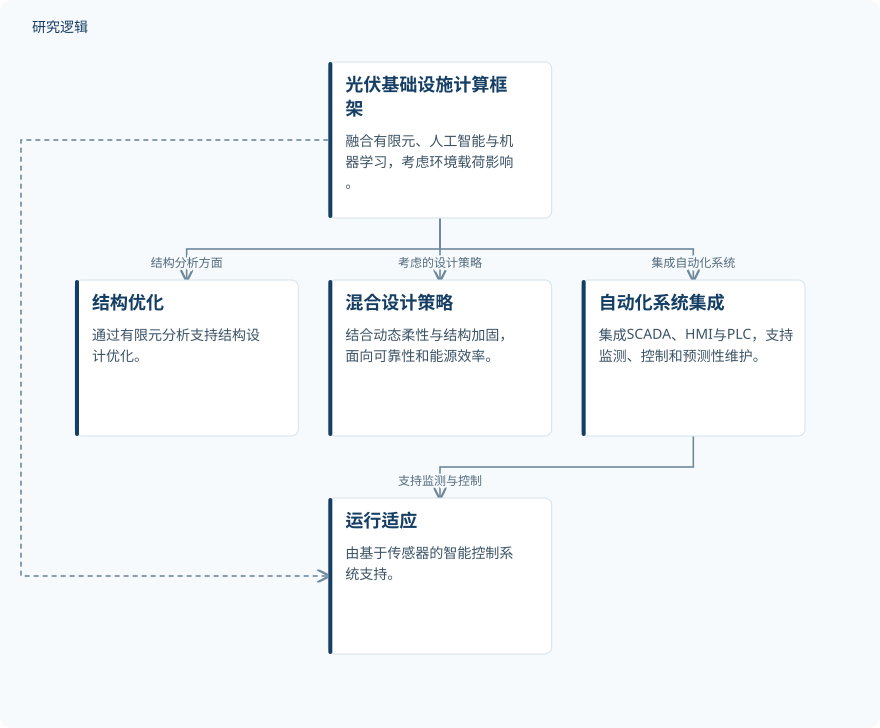

摘要解读
环境载荷下兼顾最优能源产出的太阳能板基础设施计算智能设计
Computationally Smart Design of Solar Panel Infrastructures Under Environmental Loads for Optimal Energy Yield
解读更新 2026-11-10 16:51 · 依据公开摘要整理，未核验全文细节
风、雪、温度变化与地震不仅考验太阳能板基础设施的结构安全，也可能影响发电表现与维护成本。这项研究尝试结合有限元分析与智能控制，讨论如何同时兼顾结构可靠性和运行适应能力。
文章目录
太阳能基础设施需要兼顾承载与运行
摘要指出，传统设计方法往往未能充分考虑环境载荷带来的结构和运行挑战，可能导致能量产出下降、维护成本增加。因此，研究关注的不只是结构能否承受载荷，还包括设施在不同环境条件下能否维持性能。
摘要开篇也谈及智能电网与氢储能，但具体研究框架聚焦于太阳能板基础设施。不能据此将氢储能理解为本文已经完成设计或验证的研究对象。
有限元结构优化与传感控制相结合
研究提出一个融合有限元方法（FEM）、人工智能（AI）与机器学习（ML）的计算框架，包含两条主要工作线：利用有限元分析开展结构优化，以及通过基于传感器的智能控制系统支持运行适应。
作者对环境载荷进行系统分类，并评估其对系统性能的影响；同时考虑结合动态柔性与结构加固的混合设计策略，以改善结构可靠性和能源效率。摘要没有进一步说明具体采用何种人工智能或机器学习算法。
框架还集成监控与数据采集系统（SCADA）、人机界面（HMI）和可编程逻辑控制器（PLC），用于支持实时监测、控制与预测性维护。这些是摘要明确列出的系统功能，不能直接等同于维护效果已经得到量化验证。
依据摘要整理的太阳能基础设施计算框架


概括摘要明确陈述的框架组成与功能关系，不代表论文原图，也不表示具体执行顺序或已验证的效果。
下载 SVG图示关系说明
实线表示相邻阶段的信息流，虚线表示跨阶段联系或反馈。
计算设计框架 → 环境载荷分析：分类并评估载荷；计算设计框架 → 有限元结构优化：结构优化工作线；计算设计框架 → 传感器智能控制：运行适应工作线；计算设计框架 → 混合设计策略：考虑混合设计；计算设计框架 → 自动化系统集成：集成自动化系统
摘要报告性能与可靠性的定性改善
摘要报告，相较于传统设计方法，所提方法能够改善系统性能与可靠性，并将计算建模、智能控制和数据驱动技术的集成描述为一种可扩展的解决方案。不过，摘要未给出提升幅度、发电量变化或维护成本变化，因而当前只能保留这一概括性结论。
样本、比较基准与验证范围仍待核对
仅凭本次摘要，无法判断研究使用了多少样本、何种结构与材料、哪些载荷组合，以及仿真和实测各自覆盖的范围；也无法明确传统设计比较对象、性能指标和验证方式。上述信息属于摘要未报告的内容，并不意味着论文没有开展相关工作。
同样，摘要不足以判断预测性维护的准确性、系统在不同场景中的可扩展性，或可靠性评价是否涉及疲劳寿命，不能将这些内容视为已获验证的成果。
阅读启发：关注结构分析如何连接运行决策
阅读启发：进一步阅读时，值得关注有限元分析结果如何进入智能控制决策，环境载荷分类又如何关联运行调整与维护判断。另一个关键问题是，动态柔性与结构加固如何共同兼顾可靠性和能源效率。厘清这些连接，比仅关注框架中集成了哪些技术更有助于理解其实际贡献。
以上为本站阅读启发与建议，不是论文已验证的结论。